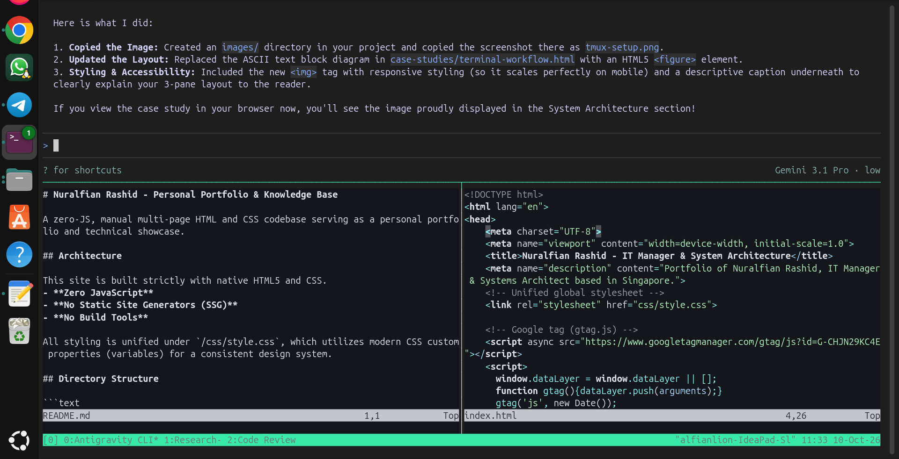

Terminal Velocity: Replacing VS Code with Ubuntu, Tmux, and Neovim
Overview / Context
Development tools should amplify intent, not compete for cognitive bandwidth. Due to continuous VS Code updates, heavy UI overhead, and extension breakage, I rebuilt my workstation around Ubuntu 26.04.1 LTS, Tmux, and Neovim.
My primary motivation was removing unnecessary friction. Compared to Windows, Ubuntu eliminates forced system updates, background telemetry, and pre-installed consumer bloatware that constantly interfered with local dev environments. By mirroring my cloud environment locally, I eliminated OS bloat and unified my operational tooling across remote servers and local hardware.
System Architecture
Rather than jumping between GUI windows, I use Tmux as an all-in-one process and session manager. A single terminal window is split into dedicated, functional panes that keep everything necessary in immediate line of sight:

Technical Challenges
- Tooling Fatigue: Modern IDEs like VS Code often introduce feature bloat and breaking extension changes that don't add value per se, while creating unpredictable resource usage.
- Cognitive Overhead: Constantly having to re-learn your IDE after background updates takes up significant time and mental energy, detracting from actual problem-solving.
Execution & Implementation
By relying on native terminal primitives like keyboard shortcuts, Unix pipes, Neovim registers, and Tmux session persistence, my workstation setup remains completely stable. It does not change underneath me unexpectedly.
Furthermore, working daily inside the exact same operating system used in production (e.g., Amazon EC2 instances) creates deep familiarity. Shell scripts and diagnostic tools run identically locally and remotely, meaning zero cognitive drift when debugging systemd services or network bindings.
Results & Learnings
- Environment Parity Works: Running the same OS locally that you use in production builds muscle memory that pays off massively during live troubleshooting.
- Context Switching Kills Flow: Keeping AI agents, notes, and code visible across single-window Tmux panes maintains focus better than ALT-tabbing between isolated GUI apps.
- Simplicity Brings Longevity: Terminal workflows built on plain text and shell utilities survive API updates, IDE deprecations, and hardware upgrades.